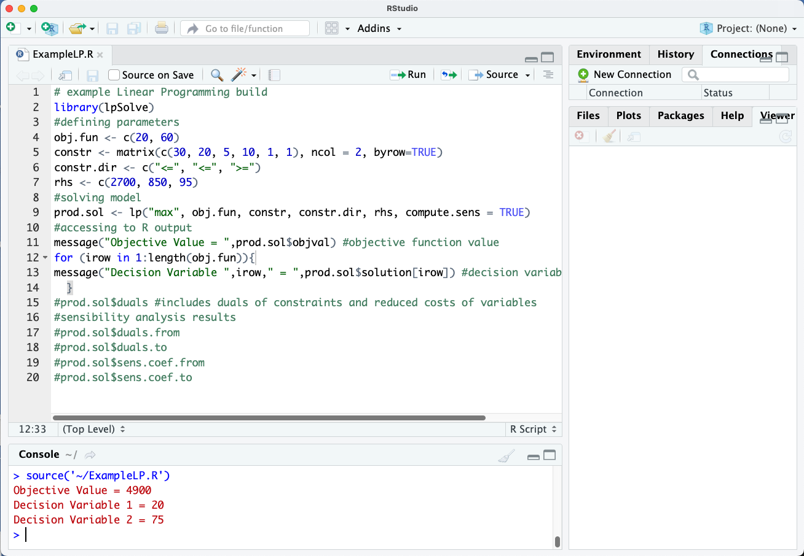

Linear Programming for Decision Support¶
Linear Programming (LP) is a powerful mathematical technique used for optimization. It involves maximizing or minimizing a linear objective function, subject to a set of linear constraints. The objective function represents the quantity to be optimized (such as profit or cost), while the constraints define the limitations or conditions within which the optimization must occur (like resource availability or production capacities).
LP is widely applied in various fields such as economics, engineering, business management, and logistics, where decisions need to be made to allocate limited resources efficiently. The method is particularly valuable because it provides a systematic way to find the best possible solution given these constraints, ensuring optimal decision-making and resource allocation. Through LP, complex real-world problems can be transformed into a structured mathematical framework, facilitating informed decision-making and maximizing outcomes.
Solving Linear Programs¶
Danzig’s algorithm also known as the simplex method, is a fundamental technique within Linear Programming for solving optimization problems. Developed by George Dantzig in the late 1940s, it revolutionized the field by providing an efficient way to find the optimal solution to linear programming problems.
Here’s how Danzig’s algorithm fits into the broader context of Linear Programming: Linear Programming (LP):
LP involves optimizing a linear objective function subject to linear constraints. The general form is:
Maximize: \(c^T x\)
Subject to:
\(Ax <= b\);\(Ix >= 0\)
Where:
\(x\) is the vector of decision variables to be determined,
\(c\) is the vector of coefficients representing the objective function to maximize,
\(A\) is the matrix of coefficients of the constraints,
\(I\) is the identity matrix
\(b\) is the vector of constants on the right-hand side of the constraints.
Danzig’s Algorithm (Simplex Method):¶
Danzig’s algorithm is an iterative procedure that systematically moves from one feasible solution to another along the edges of the feasible region until the optimal solution is found. The steps involved typically include:
Initialization: Start with a feasible solution.
Iteration: Move to an adjacent feasible solution that improves the objective function (if possible).
Termination: Stop when no further improvements can be made, indicating the optimal solution has been reached.
The simplex method operates by pivoting among the variables to gradually improve the objective function value. It ensures that each iteration moves closer to the optimal solution by following a strategic path through the vertices (corners) of the feasible region defined by the constraints. Benefits and Applications:
Efficiency: Despite its theoretical worst-case exponential time complexity, the simplex method often performs efficiently in practice for many real-world problems.
Versatility: It can handle large-scale linear programming problems with numerous variables and constraints, making it applicable in diverse fields such as economics (production planning), logistics (supply chain optimization), and finance (portfolio optimization).
Optimality: Danzig’s algorithm guarantees finding the optimal solution under certain conditions, providing confidence in decision-making processes.
The simplex method is a cornerstone of Linear Programming (there is a similarily named method in non-linear programming), offering a systematic approach to solving optimization problems by iteratively improving feasible solutions until the best possible outcome is achieved, within the constraints provided. Its practical applications and theoretical underpinnings make it indispensable in various industries for making informed decisions and optimizing resource allocations.
Practical Implementation¶
Except for really small (trivial) problems, LP is unworkable by hand. Usually some specalized tool is used including:
MS Excel Solver Add-In. Farily simple to implement, but limited in overall problem scale. Many significant problems have millions of decision variables, Excel cannot handle those size problems. An internet search produces a lot of tutorials such as: Linear Programming with Solver
R Packages. Harder to implement; requires some understanding of R libraries, but can handle larger scale problems and is far easier to automate multi-stage programming. An example package is dummy
Python Packages. Like R, requires some understanding of python libraries, but can handle large scale problems, is inherently automatable. An example is shown beloy using the
scipykernel library; there are other libraries - see the reference list. One thing to note is the python tools are very architecture dependent - some only work on Intel/AMD architecture (specific hardware) others are more general and can run on ARM architecture. The example below runs fine on Raspberry Pi, or an Intel laptop, or an AWS virtual private server.Commercial Software For really big problems, one will use commercial software such as LINDO, MINOS or IBM CPLEX
Example using scipy¶
The example below is verbatim from Mirko Stojiljković (2020) Hands-On Linear Programming: Optimization With Python. Real Python (Blog Post)
from scipy.optimize import linprog
obj = [-1, -2]
lhs_ineq = [[ 2, 1], # Red constraint left side
[-4, 5], # Blue constraint left side
[ 1, -2]] # Yellow constraint left side
rhs_ineq = [20, # Red constraint right side
10, # Blue constraint right side
2] # Yellow constraint right side
lhs_eq = [[-1, 5]] # Green constraint left side
rhs_eq = [15] # Green constraint right side
bnd = [(0, float("inf")), # Bounds of x
(0, float("inf"))] # Bounds of y
opt = linprog(c=obj, A_ub=lhs_ineq, b_ub=rhs_ineq,
... A_eq=lhs_eq, b_eq=rhs_eq, bounds=bnd,
... method="revised simplex")
opt
con: array([1.77635684e-15])
fun: -16.818181818181817
message: 'Optimization terminated successfully.'
nit: 3
slack: array([ 0. , 18.18181818, 3.36363636])
status: 0
success: True
x: array([7.72727273, 4.54545455])
Example using PuLP¶
The example below is verbatim from Priyansh Soni (2020) Linear Programming using Python. Towards Data Science (Blog Post)
Note
This example does not play well with a Raspberry Pi, my guess is some apsect in PuLP is not compiling correctly for the ARM processor. The change in solver type produces correct output - this is typical for packages regardless of host type. The user needs to mess with things to get it working.
from pulp import * # pulp needs to be installed into the kernel first
import pandas as pd
import numpy as np
n_warehouses = 2
n_customers = 4
# Cost Matrix
cost_matrix = np.array([[1, 3, 0.5, 4],
[2.5, 5, 1.5, 2.5]])
# Demand Matrix
cust_demands = np.array([35000, 22000, 18000, 30000])
# Supply Matrix
warehouse_supply = np.array([60000, 80000])
model = LpProblem("Supply-Demand-Problem", LpMinimize)
variable_names = [str(i)+str(j) for j in range(1, n_customers+1) for i in range(1, n_warehouses+1)]
variable_names.sort()
print("Variable Indices:", variable_names)
DV_variables = LpVariable.matrix("X", variable_names, cat = "Integer", lowBound= 0 )
allocation = np.array(DV_variables).reshape(2,4)
print("Decision Variable/Allocation Matrix: ")
print(allocation)
obj_func = lpSum(allocation*cost_matrix)
print(obj_func)
model += obj_func
print(model)
Variable Indices: ['11', '12', '13', '14', '21', '22', '23', '24']
Decision Variable/Allocation Matrix:
[[X_11 X_12 X_13 X_14]
[X_21 X_22 X_23 X_24]]
X_11 + 3.0*X_12 + 0.5*X_13 + 4.0*X_14 + 2.5*X_21 + 5.0*X_22 + 1.5*X_23 + 2.5*X_24
Supply-Demand-Problem:
MINIMIZE
1.0*X_11 + 3.0*X_12 + 0.5*X_13 + 4.0*X_14 + 2.5*X_21 + 5.0*X_22 + 1.5*X_23 + 2.5*X_24 + 0.0
VARIABLES
0 <= X_11 Integer
0 <= X_12 Integer
0 <= X_13 Integer
0 <= X_14 Integer
0 <= X_21 Integer
0 <= X_22 Integer
0 <= X_23 Integer
0 <= X_24 Integer
#Supply Constraints
for i in range(n_warehouses):
print(lpSum(allocation[i][j] for j in range(n_customers)) <= warehouse_supply[i])
model += lpSum(allocation[i][j] for j in range(n_customers)) <= warehouse_supply[i] , "Supply Constraints " + str(i)
X_11 + X_12 + X_13 + X_14 <= 60000
X_21 + X_22 + X_23 + X_24 <= 80000
# Demand Constraints
for j in range(n_customers):
print(lpSum(allocation[i][j] for i in range(n_warehouses)) >= cust_demands[j])
model += lpSum(allocation[i][j] for i in range(n_warehouses)) >= cust_demands[j] , "Demand Constraints " + str(j)
X_11 + X_21 >= 35000
X_12 + X_22 >= 22000
X_13 + X_23 >= 18000
X_14 + X_24 >= 30000
model.writeMPS("Supply_demand_prob.lp") # write problem set-up to a text file
[X_11, X_12, X_13, X_14, X_21, X_22, X_23, X_24]
from pulp import GLPK # A working solver needs to be loaded explicit on ARM!
#model.solve()
model.solve(solver=GLPK(msg=True))
status = LpStatus[model.status]
print(status)
Optimal
print("Total Cost:", model.objective.value())
# Decision Variables
for v in model.variables():
try:
print(v.name,"=", v.value())
except:
print("error couldnt find value")
Total Cost: 200000.0
X_11 = 35000
X_12 = 22000
X_13 = 3000
X_14 = 0
X_21 = 0
X_22 = 0
X_23 = 15000
X_24 = 30000
# Warehouse 1 and Warehouse 2 required capacity
for i in range(n_warehouses):
print("Warehouse ", str(i+1))
print(lpSum(allocation[i][j].value() for j in range(n_customers)))
Warehouse 1
60000
Warehouse 2
45000
This package looks more complicated than the other example, the value is the ability to save a file. There is at the time of writing some issue with reading in the file, but it will undoubtable be solved in time. As a practical matter, the analyst should code the entire model in such a way that reconstruction is simple.
Example using R¶
Consider another really simple example:
\(\text{ minimize : }20 x_1 + 60 x_2\)
\(\text{ subject to : }30 x_1 + 20 x_2 <= 2700\)
\(~~~~~~~~~~~~~~~~~~~~~ 5 x_1 + 10 x_2 <= 850\)
\(~~~~~~~~~~~~~~~~~~~~~~~~~~~ x_1 + x_2 >= 95\)
The screen capture below solves the LP above in R. It uses the library LpSolve. The syntax is awkward compared to the python scripts, but is otherwise similar.

Modeling and Solving Linear Programs with R is a good starting place if you want to use R to do your computations.
Summary¶
This section introduced practical approaches to solving Linear Programs, and illustrated use of Python packages to do so.
Addendum Python-MIP¶
Python-MIP is one of many LP solvers avaialble on the mighty internet; it is architecture specific, for students using X86-64 machines, the Anaconda install should be just fine, and you can use any LP solver you wish)
MIP means mixed integer programs, which are hard to solve efficiently. The example below is a script to solve a knapsack problem, but it has to be run on a X86-64 architecture (the libraries do not have the necessary ARM .so modules)
To install sudo -H /opt/jupyterhub/bin/python3 -m pip install mip
from mip import Model, xsum, maximize, BINARY # need to install mip into the kernel first!!
p = [10, 13, 18, 31, 7, 15]
w = [11, 15, 20, 35, 10, 33]
c, I = 47, range(len(w))
m = Model("knapsack")
x = [m.add_var(var_type=BINARY) for i in I]
m.objective = maximize(xsum(p[i] * x[i] for i in I))
m += xsum(w[i] * x[i] for i in I) <= c
m.optimize()
selected = [i for i in I if x[i].x >= 0.99]
print("selected items: {}".format(selected))